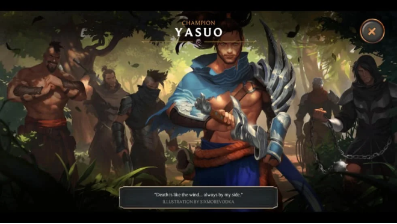

Legends of Runeterra
ในช่วง 10 ปีที่ผ่านมา แทบไม่มีใครเลยที่ทราบว่า Riot Game ได้สร้างและวางแผนสำหรับอนาคตหลังครบ 1 ทศวรรษของพวกเขาไว้อย่างยิ่งใหญ่อลังการ เพราะนอกจาก League of Legends หนึ่งในเกม MOBA และ เกมชั้นนำแถวหน้าที่มีผู้เล่นเป็นอันดับต้น ๆ ของโลกแล้ว พวกเขาก็ไม่เคยพูดถึงเกมอื่น ๆ เลย แม้จะมีข่าวหลุดออกมาบ้างเป็นบางครั้งก็ตาม หนึ่งในเกมที่ออกมาหลังจากการเปิดตัวอันเป็นตำนานเมื่อวันที่ 16 ต.ค. 2562 ก็คือ “Legends of Runeterra” หรือ LoR ที่เปลี่ยนจากเกมแนว MOBA กลายเป็นการ์ดเกมที่กำลังได้รับความนิยมมากขึ้นอยู่ในขณะนี้
จากที่ก่อนหน้านี้ ที่ Riot เคยกล่าวไว้ว่า ที่จริงพวกเขาแอบซุ่มพัฒนา LoR นี้มาหลายปีแล้วนั้น จากการทดสอบก็ได้เห็นว่า พวกเขาไม่ได้พูดเกินความจริงเลย การ์ดแต่ละใบไม่ต่างกับผลงานศิลปะที่ถูกสรรสร้างออกมาอย่างวิจิตร พร้อมเนื้อเรื่องของตัวเองในแต่ละใบอย่างที่ได้กล่าวไป เราสามารถกดเข้าไปดูรายละเอียดของการ์ดได้ที่ Collection ของเกม รวมถึงสามารถชมภาพ Splash Art แบบเต็ม ๆ ของทุกใบได้เช่นกัน
แน่นอนว่า นี่คือวิธีการอันแยบยลของเกมที่จะเป็นการบังคับกลาย ๆ ให้ผู้เล่นจะต้องทำความรู้จักกับการ์ดทุกใบในเกม เพื่อให้เราได้รู้ว่าการ์ดแต่ละใบนั้นมีความสามารถใดอยู่นั่นเอง ทำให้เข้าใจและสามารถสรรคสร้างเทคนิคต่าง ๆ ได้มากขึ้น ในตอนนี้การ์ดใน LoR ก็มีแล้วนับร้อยใบ และแน่นอนว่าจะมีตามมาอีกในอนาคตอย่างแน่นอน ซึ่งก็หมายถึงเนื้อเรื่องใหม่ ๆ ที่ไม่รู้จบอีกด้วย